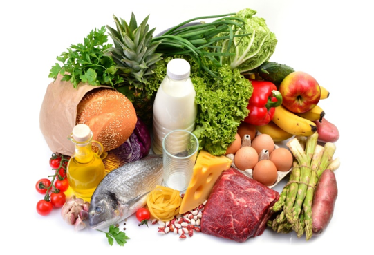

โภชนาการ
โภชนาการเป็นเรื่องเกี่ยวกับความสัมพันธ์ระหว่างอาหารกับสุขภาพของมนุษย์ ร่างกายจำเป็นต้องได้รับสารอาหารหลายชนิดเพื่อใช้ในการเจริญเติบโต ซ่อมแซมส่วนที่สึกหรอ และเป็นพลังงานสำหรับการทำกิจกรรมต่าง ๆ สารอาหารที่สำคัญ ได้แก่ คาร์โบไฮเดรต โปรตีน ไขมัน วิตามิน แร่ธาตุ และน้ำ การรับประทานอาหารที่เหมาะสมควรเน้นความหลากหลายและความสมดุล ไม่ควรรับประทานอาหารประเภทใดประเภทหนึ่งมากเกินไป ควรรับประทานผักและผลไม้ รวมถึงอาหารที่ให้โปรตีนและพลังงานอย่างเหมาะสม นอกจากนี้ควรระมัดระวังอาหารที่มีน้ำตาล ไขมัน หรือโซเดียมในปริมาณสูง เพราะการบริโภคเป็นประจำในปริมาณมากอาจส่งผลเสียต่อสุขภาพได้ ในวัยเรียน โภชนาการมีความสำคัญอย่างมาก เนื่องจากเป็นช่วงที่ร่างกายยังมีการเจริญเติบโตและต้องใช้พลังงานในการเรียนและทำกิจกรรมต่าง ๆ การรับประทานอาหารที่เหมาะสมจึงช่วยให้ร่างกายได้รับสารอาหารที่จำเป็น และช่วยสนับสนุนการทำงานของสมองและร่างกาย การดูแลโภชนาการจึงควรเริ่มจากการสร้างนิสัยการกินที่ดีและเลือกอาหารอย่างมีความรู้